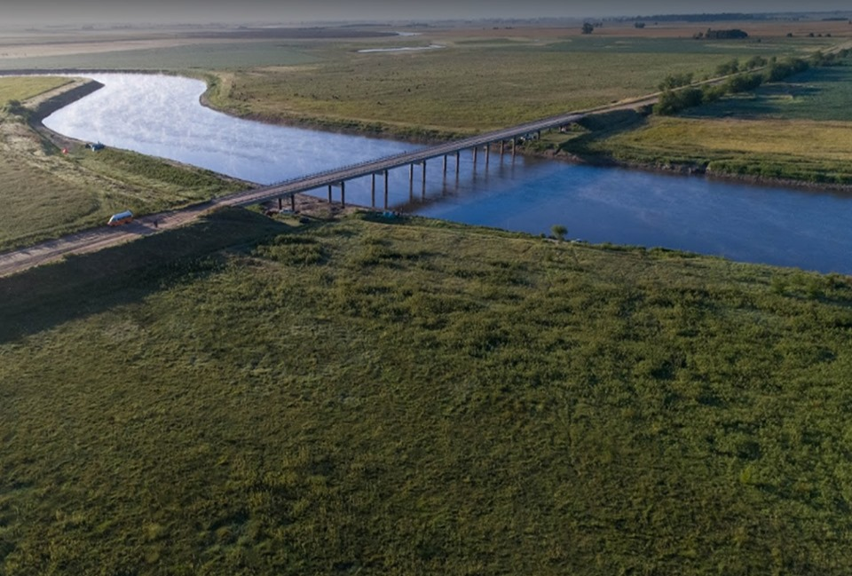

Pila es una ciudad situada en el centro este de la provincia de Buenos Aires, Argentina. El Partido de Pila se encuentra ubicado en el centro este de la Provincia de Buenos Aires, a 190 km. Aproximadamente de la Ciudad Autónoma de Buenos Aires.
Limita con los partidos de General Belgrano, Chascomús, Castelli, Dolores, General Guido, Ayacucho, Rauch y Las Flores. Se encuentra a unos 193 KM de Capital Federal.
Lugares para pescar
El primer lugar, se encuentra en el partido de pila,ahi podremos llegar con el auto hasta la orilla del rio, tambien podemos recorrerlo caminando por ambos lados. Tenemos el puente que nos sirve de refugio en dias de lluvias como de calor, ya
que no encontrarmos arboles en lecho del rio. Se encuentra a 170 km de Capital Federal

Lugares para pescar
El segundo lugar, se encuentra en el partido de pila se llama arroyo camaron,ahi podremos llegar con el auto hasta la orilla del rio, tambien podemos recorrerlo caminando por ambos lados. Se encuentra a 214 km de Capital Federal

Lugares para pescar
El tercer lugar, se encuentra en el partido de pila se llama arroyo San Miguel,ahi podremos llegar con el auto hasta la orilla del rio, tambien podemos recorrerlo caminando por ambos lados. Se encuentra a 202 km de Capital Federal